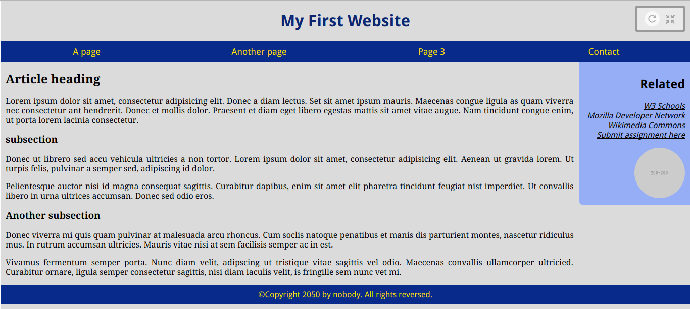

CSC 130 Lab 5 - CSS First Steps
Welcome to Thimble! Take a look around, see what the buttons do, and create an account if you want your work saved online (Thimble saves your work automatically). If you do not want to use Thimble, you can use Brackets instead, it is a good code editor, but it is a bit more complex. Thimble is made for learning HTML and CSS.
The goal of this lab is going to change the CSS styles of our page to make it look like the image below (you are free to choose the colors). Don't worry, we are going to go step-by-step. For this lab we will only worry about making the page for a desktop. Design for mobile will come later.
CSS Syntax and Terminology
A CSS rule-set consists of a selector and a declaration block:

The selector points to the HTML element you want to style.
The declaration block contains one or more declarations separated by semicolons.
Each declaration includes a CSS property name and a value, separated by a colon.
A CSS declaration always ends with a semicolon, and declaration blocks are surrounded by curly braces.
The CSS box model
Go take a look at this page before going further: CSS Box Model
The most important thing to remember from this page is: when you set the width and height properties of an element with CSS, you just set the width and height of the content area. To calculate the full size of an element, you must also add padding, borders and margins.
Step-by-Step Instructions
-
The first step is to look at the html code I created for you, in
index.html. You will see a few elements that I didn't introduce in the lecture. No problem, you can click on them and pressalt+kto see the documentation for these elements.alt+kis going to be your best friend for a while, there are a lot of different HTML elements and CSS properties, each with a specific purpose. You should pressalt+keach time you see a new element or property, it will give you even more information than these instructions, but also get you used to read HTML/CSS documentation.Back to these new HTML elements: they correspond to standard parts of pages that you can see in most websites (unless the page is displaying a fullscreen video or game, is part of some kind of art project, or is just badly structured):
- A
header: usually a big strip across the top with a big heading and/or logo. This is where the main common information about a website usually stays from one webpage to another. -
nav(navigation bar): links to the site's main sections; usually represented by menu buttons, links, or tabs. Like the header, this content usually remains consistent from one webpage to another. -
main: a big area in the center that contains most of the unique content of a given webpage, for example the video you want to watch, or the main story you're reading, or the map you want to view, or the news headlines, etc. This is the one part of the website that definitely will vary from page to page! aside(sidebar): some peripheral info, links, quotes, ads, etc. Usually this is contextual to what is contained in the main content (for example on a news article page, the sidebar might contain the author's bio, or links to related articles) but there are also cases where you'll find some recurring elements like a secondary navigation system.footer: a strip across the bottom of the page that generally contains fine print, copyright notices, or contact info. It's a place to put common information (like the header) but usually that information is not critical or secondary to the website itself. The footer is also sometimes used for SEO purposes, by providing links for quick access to popular content.
- A
-
Let's start styling our page, from the top. Open the
style.cssfile. For now it is almost empty. The first thing we want to do is to change the background color of the page (usually you want something less bright than white). If you want a rule to apply to the whole page (e.g.color,background-color,font-family), then you need to apply these rules to the top-most element of your page, which is alwaysbody. Therefore, what you need to do here is add abackground-colorproperty to the rule-set that applies tobody, for instancebackground-color: rgb(219, 219, 219).Note that
rgb()is a function. CSS has a few functions that are supported by all major browsers. The other function you will see a lot iscalc(), which allows you to compute some properties (but we'll see this at the end of this lab). -
Now that we have our background for the page, let's take care of the first element in it: the
header. What you need to do is create a new CSS rule-set that applies to thisheaderelement. Below the rule-set ofbody, add that new rule-set. Since we are selecting an element only based on its type, the selector is just the type of the element we want to select (i.e.,header).There are two things we need to do with that header: center the text, and change its color. The names of the properties that allow you to do that are
text-alignandcolor, respectively. Add one declaration for each of those properties (the text needs to be centered, and you can choose the color you want). -
Going down, the next element is the navigation bar (
nav). Start by changing the background of thenavelement (add a new rule-set). Once this is done, if you pay close attention to the left and right end of the navigation bar, you will see (with most browsers) that there is a small space between the edge of the navigation bar and the edge of the screen. You could try adding a declaration in thenavrule-set to set thewidthproperty at100%, so thatnavtakes all of the available space, but that is not going to change anything here.Here is what is going on here: the
navelement, as many other HTML elements, already tries by default to take all the available space. Asnavis insidebody(we also say thatbodyis the parent ofnav, ornavis a child ofbody), the only explanation is thatbodydoes not actually takes the whole page width.Why is that? Even before you started writing the CSS rules, the HTML elements of the page had already some styles applied to them (headers are larger, links are underlined, etc). That is because each browser has its own stylesheet (also called user-agent (UA) sylesheet). This is why a page that has no CSS associated to it might look a bit different from a browser to another (for instance, the default font is different between Firefox and Chrome). One of the things that browsers agree on is that the
bodyelement should have a margin (so that the text does not touch the screen edge), but we do not want this in our page.Since the stylesheet you write (called the author stylesheet) has precedence over the user-agent stylesheet, we can redefine the default CSS rules of the browser. What you need to do is simply add a
margin: 0;declaration in thebody's rule-set, and the margin around thebodywill disappear.The last declaration we need to add to the
navelement, is more space on top and bottom of the links that it contains. To add space between an element's border and its content, thepaddingproperty is the one to use. Since we only want to add padding on the top and bottom, you need to use thepadding-topandpadding-bottomproperties. Set a value of10pxfor both of these properties. -
Next, we need to take care of the links inside of the
nav. First, we need to figure out how to write the selector for those links. If we use the selectora, the rule-set is going to be applied to every link of the page, including the ones that are in the side bar.What we could do is to add a CSS class to those links, for instance
nav-link, and use the.nav-linkselector. But there is a better solution here: there is a way to write a selector forall the
, and that iselementAinside anelementBelementB elementATherefore, since what we want is to change the style of all the links (
a) inside the navigation bar (nav), your new rule-set is going to look like this:nav a { }Let's start styling those links then: by default, links are underlined, to help the reader identify this part of the page as a link (this is why you shouldn't underline regular text on a webpage, otherwise the user will think it is a link).
To underline, overline, or strikethrough some text, the CSS property to use is
text-decoration(fun fact: if you usealt+kto look at the documentation, which you should do all the time, this property even accepts a value namedblink, that is supposed to make the text blink, but this value is ignored by most browsers nowadays, probably because it made users sick).
Since we want to remove the existing underline, you need to add the following declaration:text-decoration: none;The next two things are straightforward:
- We want to increase the size of the text, so that is the property
font-size. You can set it tolarge, and let your browser decide what size large text actually is (you can also try other values to see what happens). - You need to change the color of the text. You already did this for the header, so you should know that already.
The last step is to change the position of those links. Since there are four of them, we want each link to take 1/4 of the
nav's width. Therefore, the declaration you need to add (spoiler alert: it won't work yet) iswidth: 25%;. Go ahead and add it, and oh, surprise, nothing changes. ¯\_(ツ)_/¯What is going on here? There is a very important property that we haven't seen yet:
display. As the name indicatesdisplaycontrols how an element should be displayed. It can take a lot of values, but the most important ones to know areinline,block, andinline-block.inlineis primarily intended for text (this is the default value for anaelement for instance). An element with this value will be on the same line as the previous element, and allow the next element to be placed on the same line (i.e., it doesn't break the flow of text). You can setmarginandpaddingon and inline element, but the surrounding text will only be pushed horizontally. An inline element will ignorewidthandheightblockelements are usually container elements, such asnav,div, orp. Block elements break the flow of text: they start on a new line, and the next element will have to start on a new line. They try to take as much horizontal space as possible (as we saw withnav).inline-blockelements are blocks that are inline. Since they are blocks, they can be resized, and since they are inline, they will allow other elements to be on the same line as them.
Therefore, since we want our links from the navigation bar to stay on the same line, while being able to resize them, you need to add the following declaration to the rule-set:
display: inline-block;(you can try changing it toblockfor a moment, and you will see that the links will each be on one line). Be careful,inline-blockelements will take into account the white-spaces in the HTML code. You can see that, in theindex.htmlfile, all the links of thenavelement are on the same line, without space between them. If you put a space or a new line in the code between theaelements, it will add spaces on the page, and they will not fit on a single line anymore.One last thing and we are done with the navigation bar: you need to center the text of the links. You should know how to do this already.
- We want to increase the size of the text, so that is the property
-
Next step is to have the
articleand theasideside-by-side. Usinginline-blockwon't work here, because theasidewould try to have its text inline with the end of thearticle's text, and would end up on the right, but at the bottom of the page. Instead we're going to use thefloatproperty. Start by adding the following code to yourstyle.cssfile:article { font-family: serif; text-align: justify; width: 58%; padding-left: 2%; } aside { background-color: coral; width: 31%; padding: 2%; }What this does is the following:
- Sets the font of the article to a serif font, and justifies the text
- Sets a total width of 60% for the article (56% for the content, and 2% of padding on the left and right sides)
- Sets the background color of the side bar (you can change this one)
- Sets a total width of 35% for the sidebar (31% for the content and 2% of padding on each side)
Note that the total width does not add up to 100%, that is on purpose, to leave a bit of space between the two.
At this point, the article and sidebar should both take less horizontal space, but they are still no on the same line. To do this, add the
float: left;declaration to both rule-sets.It's almost it, but we want the side bar to touch the right edge of the screen. To do this, you need to change the
float: left;declaration tofloat: right;(only in theasiderule-set). If you wanted, you could switch the article and side bar positions without even changing the HTML, by switching theirfloatproperties. (articlewould havefloat: right;andasidewould havefloat: left;) -
Let's take care of the sidebar content now. Do the following:
- Align the text inside the sidebar to the right
- Change the color of the links that are inside the sidebar
- Change the
font-styleof those links toitalic -
Lists (
ulelements) indent the text to the right by default, by using some padding. We do not need this padding here, and it is taking some space. Set the padding of thatulelement to 0 -
List items (
lielements) are using a special value for thedisplayproperty. This is what creates the bullet point next to the list items. We do not want those bullet points, so set thedisplayproperty of the list items toblock - Add a bit of space (margin or padding, it doesn't matter here), on the botton of each list item, so that the list is less compact
-
Transform the image in the sidebar to a circle (you can also change the source of the image in the HTML code). You need to use the
border-radiusproperty to do this, and set it to50%(each corner will make an arc with a radius that is half of the image width). You can try other values to see what happens. -
We also want the bottom-left corner of the sidebar to be rounded. Set the corresponding property (
border-bottom-left-radius) to10px
-
Last, but not least, the footer. Right now it should be hanging somewhere below the sidebar, and we want it at the bottom of the page. This is because of the floating elements, so we need to tell the footer that it shouldn't be positioned next to floating elements. To do so, add the following code:
footer { clear: both; }Our footer is now back to the bottom of the page. The
clearproperties defines whether floating elements are allowed to be next to the selected element. By default an element may have floating elements either left or right. Using thebothvalue for this property ensures that both left and right sides of the element are clear of floats.Now, we want to give it the same background and padding as the navigation bar, to keep some consistency in our page. Instead of copying the
navdeclarations in thefooterrule-set we just created, we can replace thenavselector that we created in step 4 by the following:nav, footer. This notation allows you to reuse the same rule-set for multiple types of elements.In a similar fashion, we want the same text color in the footer and in the links of the navigation bar, and we also want the text centered for both types of elements. Because our footer has theses two properties in common with the elements selected with
nav a, you need to create a new rule-set that has the selectornav a, footer. Move thecolorandtext-alignselectors from thenav arule-set to the one you just created. -
Your page should look good in the preview now. But if you switch to a fullscreen view, or resize the preview, you'll see that we have two problems: the paddings or the article and sidebar grow a lot, and the sidebar is also too large.
Let's take care of the paddings of the
articleandasiderule-sets first. Back in step 6, we added two declarations:padding-left: 2%;andpadding: 2%;. Setting paddings or margins with percentage length is not recommended, because it means that that space if going to be very large on a wide screen, and very small on a mobile device. Having a very large empty space is useless, and having very small margins/padding may affect the readablilty of your page.Therefore we need to set those paddings to fixed sizes in pixels. Replace both of these
2%paddings by two10pxpaddingsWe still want our
articleelement to take 60% of the page's width (padding included). So the value ofwidthshould be 60% minus 10px. This is where thecalc()function comes to the rescue.calc()is a way to do simple math in CSS. It has four simple math operators: add (+), subtract (-), multiply (*), and divide (/). The most useful ability ofcalc()is its ability to mix units, like percentages and pixels.Therefore, you need to put the following value for the
article'swidthproperty:calc(60% - 10px).Do something similar for the sidebar. Remember: we want the full width of the sidebar to be 35%, and it has a 10px padding on both sides.
That looks ok, but look at the fullscreen preview and you will see that the sidebar gets quite wide. 35% of a fullscreen width is too much for a sidebar. To limit how much the sidebar is going to expand, we can set the
max-widthproperty, and the element will never expand more than that. Set a maximum width of 200px for the sidebar's content.Try switching to fullscreen again. The sidebar should not grow more than 220px (including the padding). There is an other problem tough: the article takes only 60% of the page, which leaves a big gap when the page is large enough. Therefore, what we need is to prevent the article to shrink more than "100% of the page width" minus "the sidebar total width" minus "a few extra pixels to leave some space between the two".
Preventing an element from shrinking more than a specific size is the opposite of what we just did, so we need to use the
min-widthproperty. To get the correct value here, we need to usecalc()again.With this information in mind, we are now able to figure out the minimum width of our
articleelement: it iscalc(100% - 220px - 40px). Add this minimum width to thearticle's rule set. - Congratulations, you are done with this lab, now your page should look roughly like the one in the image at the beginning of these instructions. Copy all the content of your style.css file and submit it through connex to receive your five points.